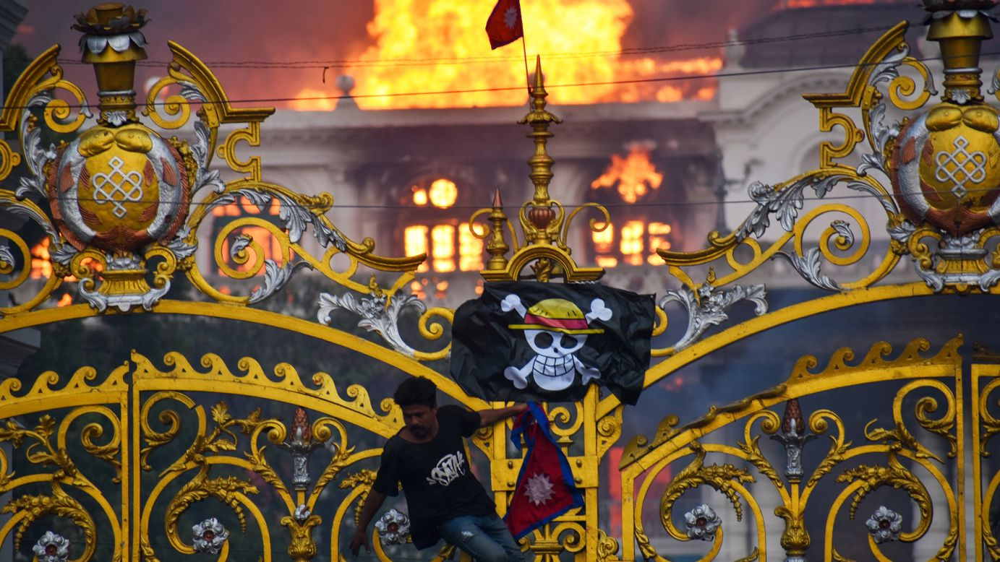

El bloqueo de redes sociales como Facebook, Instagram,TikTok, entre otras; causado por la censura digital impuesta por el gobierno de Nepal, ha desatado una serie de protestas en la nacion. El descontento de muchos jovenes se vio argumentado como un intento de mantenerlos aislados del resto del mundo para tener mayor control sobre los mismos.
En pocos dias el movimiento consiguio escalar hasta presentar violencia, dejando como resultado algunos muertos y cientos de heridos. La destruccion de propiedad publica y privada (inclullendo edificios gubernamentales) refleja el descontento de esta poblacion hacia el intento de censura de las elites.
Los mismos buscan la renuncia del primer ministro, Sharma Oli, mismo que ante la magnitud de la crisis acepto en un intento de calmar a la poblacion y evitar poner en peligro su integridad. Aun con el objetivo original del movimiento cumplido, las protestas han continuado por las calles de Nepal, esto porque se buscan mas cambios significativos en la politica y gobernanza del pais.
Se espera que las protestas continuen mientras la poblacion exige justicia y transparencia a sus gobernantes. Y aunque la situacion en Nepal continua siendo tensa, ha ganado popularidad entre el resto del mundo, inspirando a jovenes que ya no ven como imposible la posibilidad de hacer un cambio por su futuro. Mexico fue uno de esos paises inspirados por esta escena. El hecho de que todo este movimiento hubiese sucedido poco antes del asesinato de un alcalde, reconocido y apreciado por combatir directamente al crimen organizado, a manos de narcotraficantes fue la gota que derramo el vaso. Una porcion significativa de la poblacion acusa a su propio gobierno de mantener lazos con grupos criminales. El asesinato del alcalde no fue mas que la burbuja que exploto despues de tanto tiempo de haber sido inflada con descontentos. Nepal motivo a los jovenes mexicanos a exigir que su gobierno pusiera mano dura con sus criminales. Numerosas marchas han sido convocadas a lo largo de estos dias, no solo en Uruapan (municipio en el que ocurrio el ataque armado), sino que en toda la republica. Se espera que la mayor de estas movilizaciones ocurra el sabado 15 de noviembre. Os mantendremos informados ;)